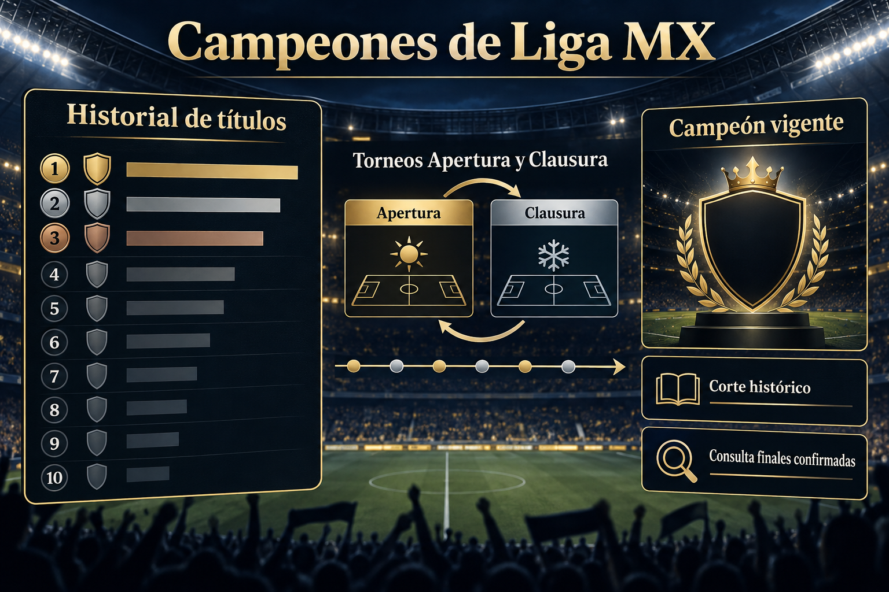

¿Quién es el máximo campeón de Liga MX?
América encabeza el historial con 16 campeonatos de liga. Guadalajara y Toluca tienen 12 cada uno, mientras Cruz Azul alcanzó 10 al conquistar el Clausura 2026.

Tabla completa de campeones de Liga MX por equipo
El recuento incluye los campeonatos profesionales de primera división desde 1943 y está ordenado de mayor a menor. En caso de empate se conserva juntos a los clubes con la misma cantidad; la columna final identifica su conquista más reciente.
| Posición | Club | Títulos | Último campeonato |
|---|---|---|---|
| 1 | América | 16 | Apertura 2024 |
| 2 | Guadalajara | 12 | Clausura 2017 |
| 2 | Toluca | 12 | Apertura 2025 |
| 4 | Cruz Azul | 10 | Clausura 2026 |
| 5 | León | 8 | Guard1anes 2020 |
| 5 | Tigres UANL | 8 | Clausura 2023 |
| 7 | Pumas UNAM | 7 | Clausura 2011 |
| 7 | Pachuca | 7 | Apertura 2022 |
| 9 | Santos Laguna | 6 | Clausura 2018 |
| 10 | Monterrey | 5 | Apertura 2019 |
| 11 | Atlante | 3 | Apertura 2007 |
| 11 | Necaxa | 3 | Invierno 1998 |
| 11 | Atlas | 3 | Clausura 2022 |
| 14 | Puebla | 2 | Temporada 1989-90 |
| 14 | Zacatepec | 2 | Temporada 1957-58 |
| 14 | Veracruz | 2 | Temporada 1949-50 |
| 17 | Oro | 1 | Temporada 1962-63 |
| 17 | Morelia | 1 | Invierno 2000 |
| 17 | Real Club España | 1 | Temporada 1944-45 |
| 17 | Tecos | 1 | Temporada 1993-94 |
| 17 | Tijuana | 1 | Apertura 2012 |
| 17 | Asturias | 1 | Temporada 1943-44 |
| 17 | Tampico | 1 | Temporada 1952-53 |
| 17 | Marte | 1 | Temporada 1953-54 |
Son 24 clubes campeones en la era profesional hasta el Clausura 2026. Para revisar la secuencia reciente de cada edición, consulta los últimos 20 campeones de Liga MX.